每天照着做
先做这 4 个动作
开始时每天 1 次。连续几天都没有更麻、更痛，再增加到每天 2 次。
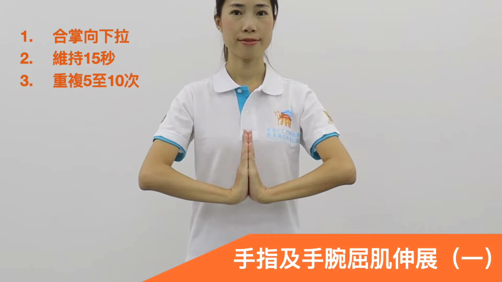
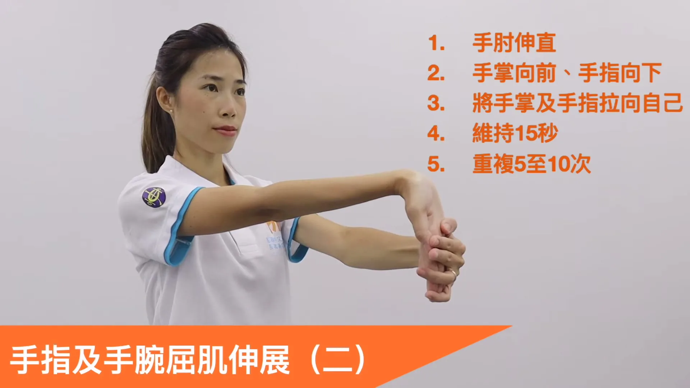
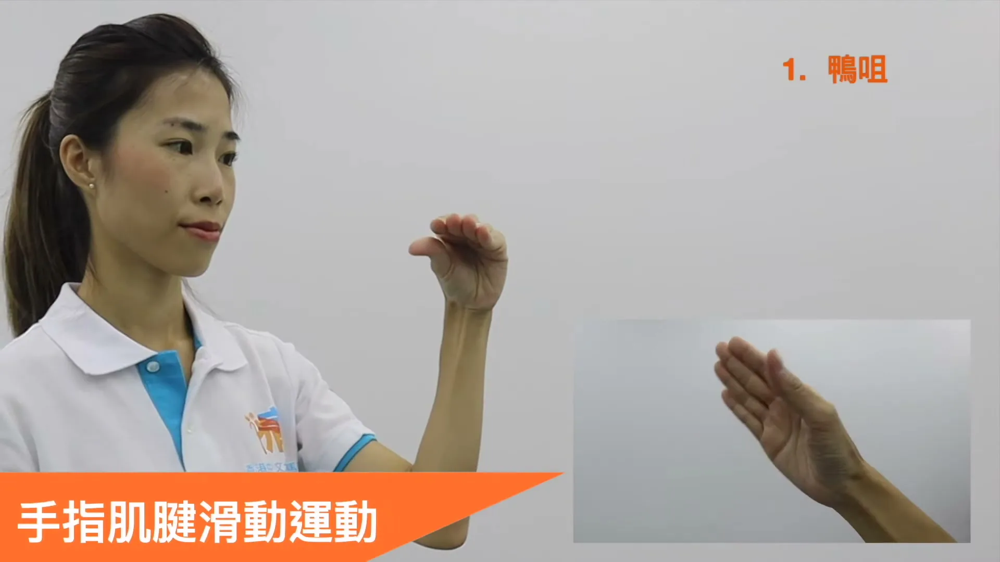
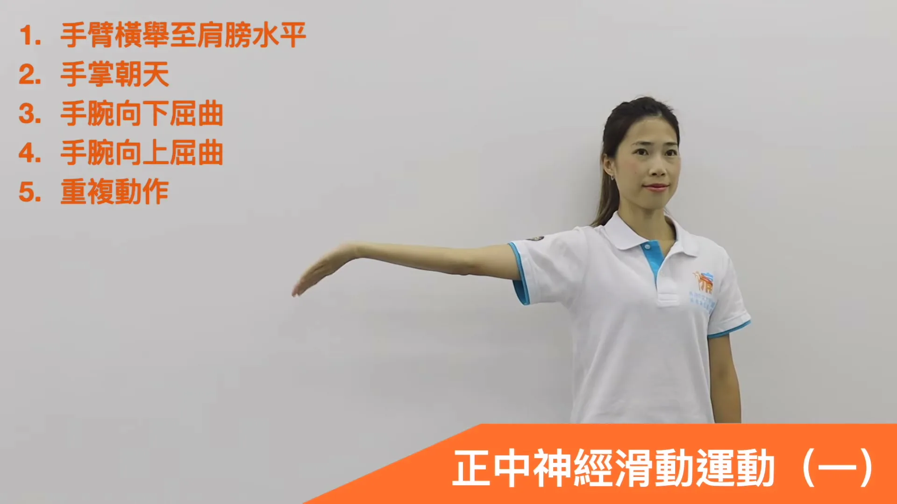
记住这一条
越做越麻、越做越痛，就停止
- 做完休息一会儿，麻痛还是没有减轻。
- 拇指越来越没力，或经常拿不住东西。
- 手麻几乎一直存在，晚上常被麻醒。
出现这些情况，不要继续硬练，应找医生或物理治疗师检查。
需要时再看完整的 10 个动作和说明
动作总览
先认清 10 个动作，再看细节
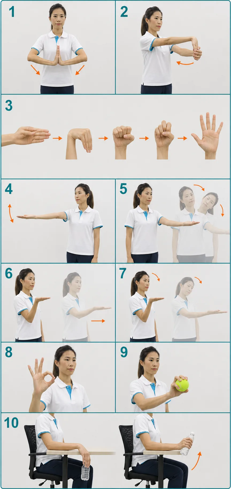
频率与周期
一次约 12–18 分钟，每天 1–3 次
动作 1–3 → 动作 4–7 中选择 1–2 个 → 动作 8–10。神经滑动不需要四个全做。
原视频建议每天练习 1–3 次。第一次可从每天 1 次开始，确认没有持续加重再增加。
视频没有规定总疗程。AAOS 示例计划为 3–4 周；可在第 4 周复盘，6 周仍无改善应就医。
重要：“12–18 分钟”是按视频次数估算的单次时长，不是原视频的硬性要求。手部练习的效果因严重程度而异，也不能替代夜间中立位护腕、活动调整、注射或手术等可能需要的治疗。
先放松，再滑动
前臂伸展与手指肌腱滑动
伸展只到轻微拉感；肌腱滑动要慢、顺，不追求用力握紧。
动作 01
合掌下压伸展
- 双掌在胸前合十，手指朝上，肩膀保持放松。
- 手掌贴合并慢慢向下移动，让两侧手肘自然向外。
- 只需轻微拉感；不要弹震，也不要把手腕压到疼痛。
动作 02
单侧手指与手腕屈肌伸展
- 手臂向前伸直但不要锁死手肘，掌面朝前，手指朝下。
- 另一手包住掌面与手指，轻轻拉向自己。
- 拉感应位于前臂掌侧；若手指麻感明显增加，立刻减小幅度或停止。
动作 03
手指肌腱滑动
- 1 鸭嘴：手指并拢伸直，在大关节处轻微弯曲。
- 2 掌指关节屈曲：弯大关节，指间关节仍伸直。
- 3 完全握拳：指尖向掌心卷入。
- 4 爪状：大关节较直，中间和末端关节弯曲。
- 5 直掌：五指伸直张开，回到起点。
不要用最大握力挤压；目标是让肌腱顺畅移动。关节活动受限时，只做到舒适范围。
观看动态演示 · 1:40轻柔滑动，不停留拉伸
正中神经滑动：四选一至二
从动作 4 开始。熟练且没有持续加重，再尝试加入头部或肘部动作。
动作 04 · 基础
手腕屈伸滑动
- 手臂侧平举至肩高，手肘伸直但不锁死，掌心朝天。
- 慢慢让手腕向下屈曲，再向上伸展。
- 头保持正中；来回过程顺畅，不追求最大幅度。
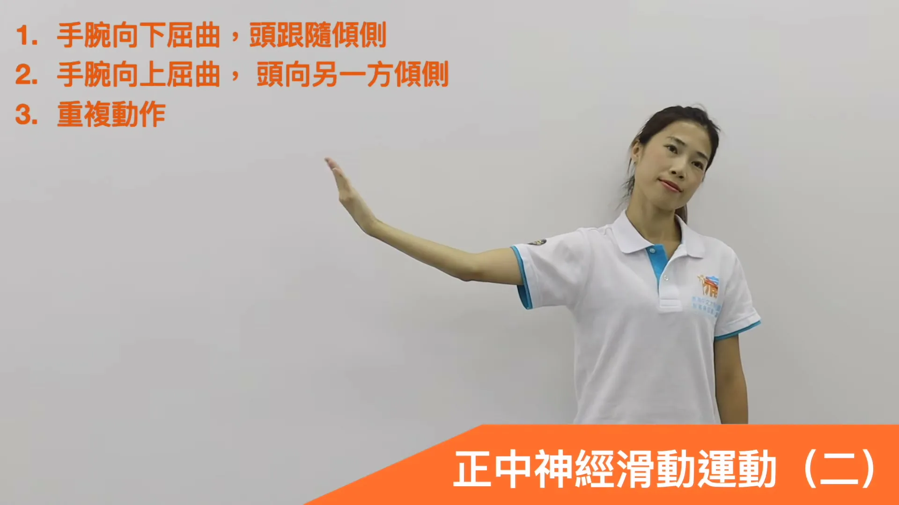
动作 05 · 进阶
手腕滑动＋头部倾侧
- 保持手臂侧平举、掌心朝天。
- 手腕向下屈曲时，头向训练手同侧倾。
- 手腕向上伸展时，头向另一侧倾；然后继续来回。
头部只需小幅度移动。颈部不舒服、眩晕或手麻持续增强时不做这一版。
观看动态演示 · 3:16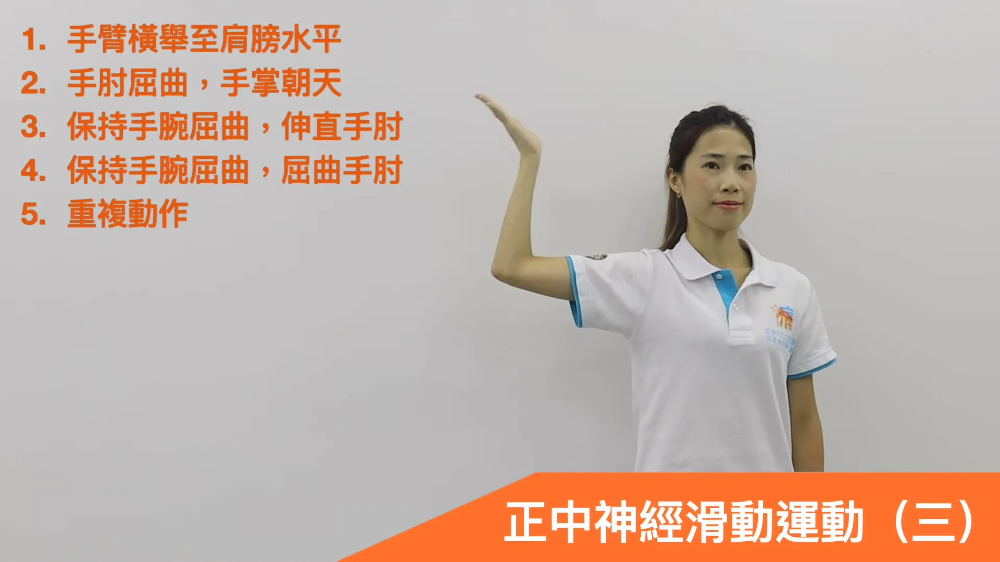
动作 06 · 进阶
托盘式肘部滑动
- 手臂抬至肩高，弯曲手肘，掌心向上，像托着盘子。
- 手腕保持向下屈曲，慢慢把手肘伸直。
- 到轻微拉感即返回，再弯曲手肘；不在伸直位停留。
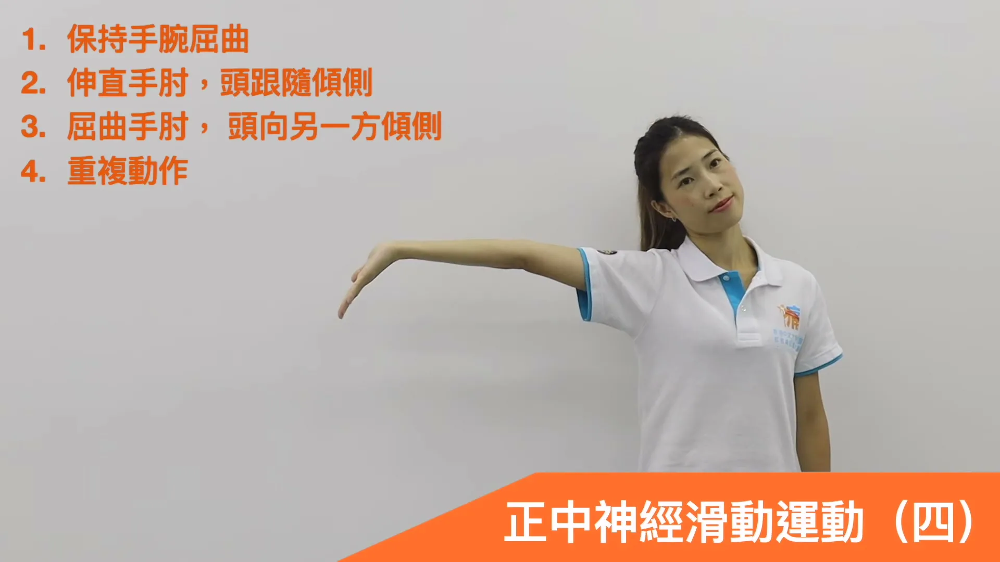
动作 07 · 最高进阶
托盘式肘部滑动＋头部倾侧
- 保持托盘姿势和手腕屈曲。
- 伸直手肘时，头向训练手同侧倾。
- 弯曲手肘时，头向另一侧倾；全程动作连续。
这是四种版本中最复杂的一项，不是“越难越有效”。基础版本有效且舒适时，无需升级。
观看动态演示 · 4:13最后再加入负荷
拇指、握力与腕伸肌训练
使用能完成规定次数、但不会诱发持续麻痛的轻阻力。力量动作不需要做到力竭。
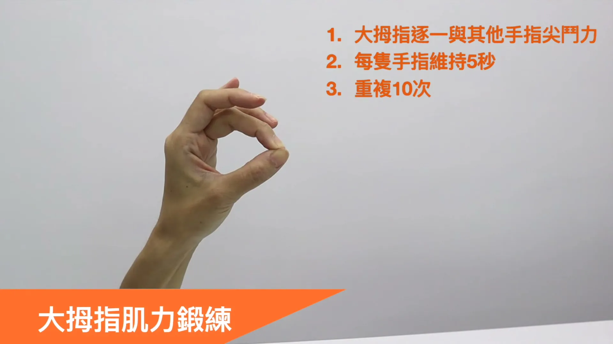
动作 08
拇指逐指对捏
- 拇指依次与另外四指的指尖相对，形成 O 形。
- 保持手腕中立，不要靠弯手腕代偿。
- 使用中等、稳定的捏力；出现拇指根部疼痛就降低力度。
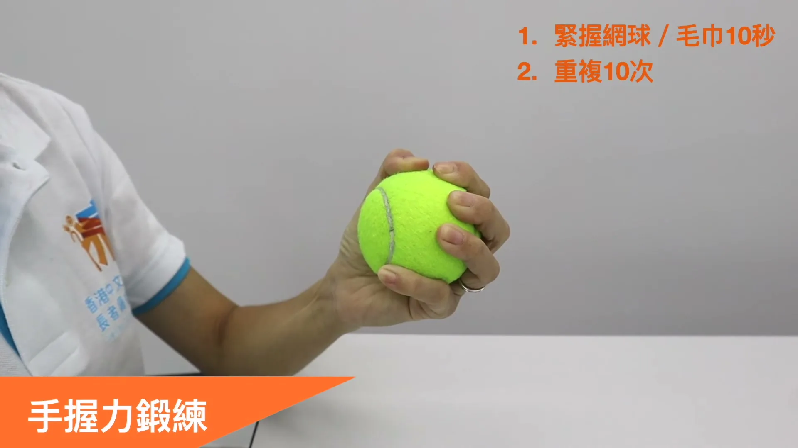
动作 09
网球／毛巾握力
- 把网球或卷起的毛巾放在掌心，手腕保持中立。
- 均匀握紧，不要只用指尖掐，也不要耸肩。
- 如果强力握持本来就会诱发麻痛，先跳过这一项。
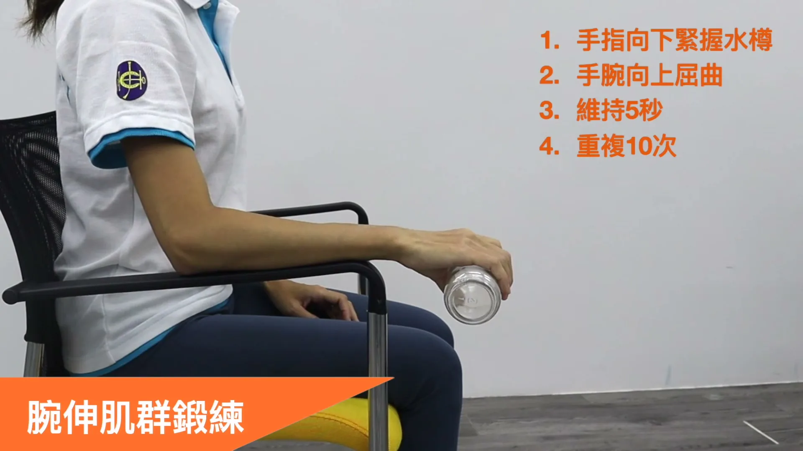
动作 10
水瓶腕伸肌训练
- 前臂放在桌面或扶手上，手腕悬在边缘，手指朝下握轻水瓶。
- 前臂不动，慢慢把手背向上抬。
- 最高位保持 5 秒，再受控放下；完成后换手。
不要从大水瓶开始。若手麻、腕痛或抓不稳，减轻重量或停止。
观看动态演示 · 5:18来源与证据边界
视频给动作，医疗资料划定安全边界
动作顺序、保持时间、重复次数和“每天 1–3 次”来自香港中文大学中大痛症视频。AAOS 的练习资料建议类似计划持续 3–4 周；NHS 决策工具指出手部练习若有效，症状约 4 周可见改善，但严重或持续症状可能造成不可逆神经损伤。AAOS 2024 指南同时提醒，运动通常只能带来有限或短期帮助，因此本页没有把它写成“根治方案”。